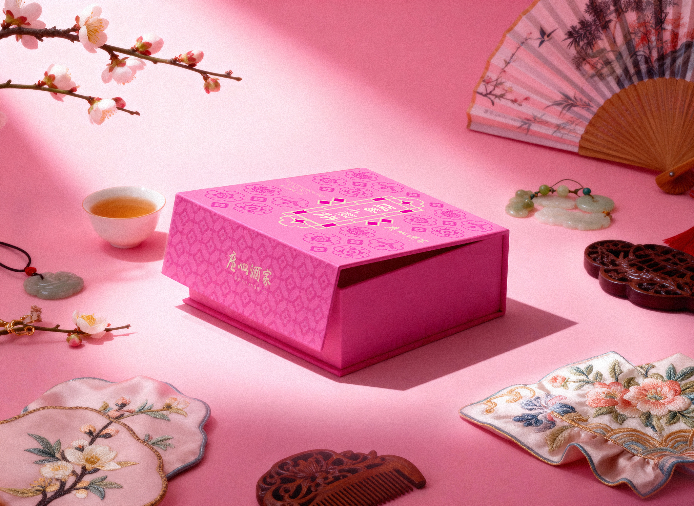
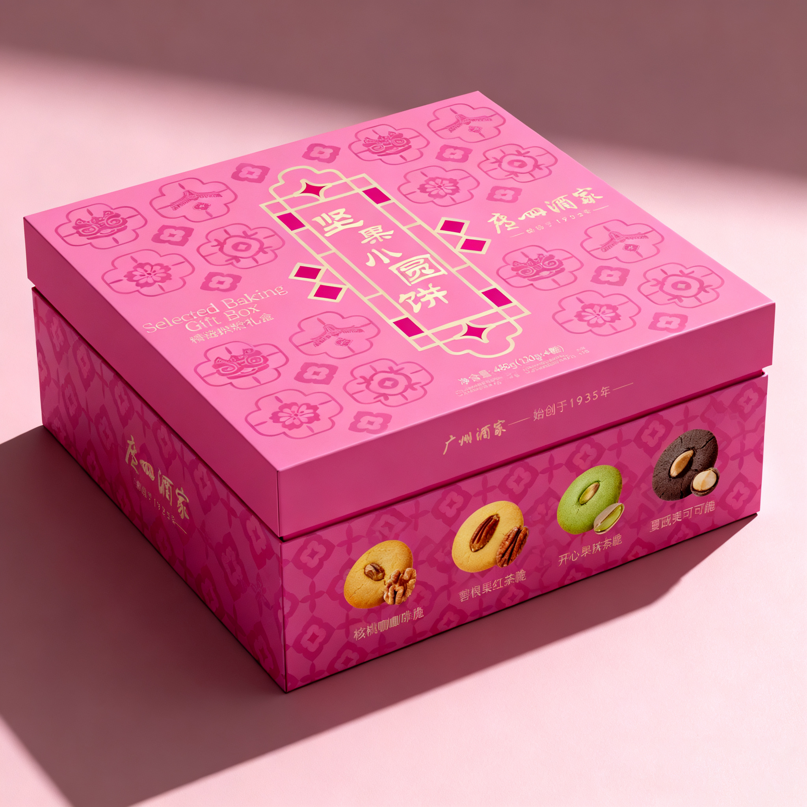
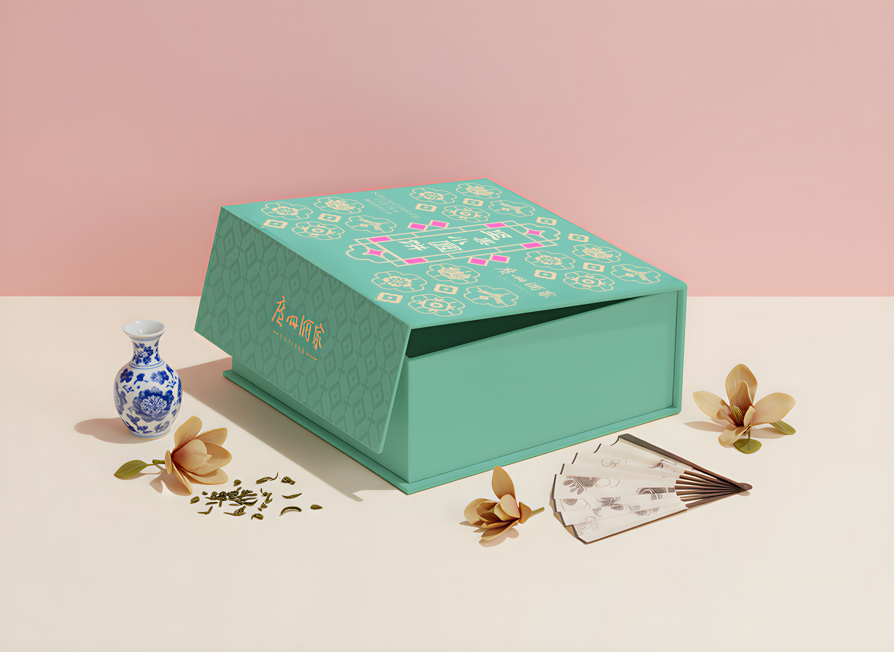
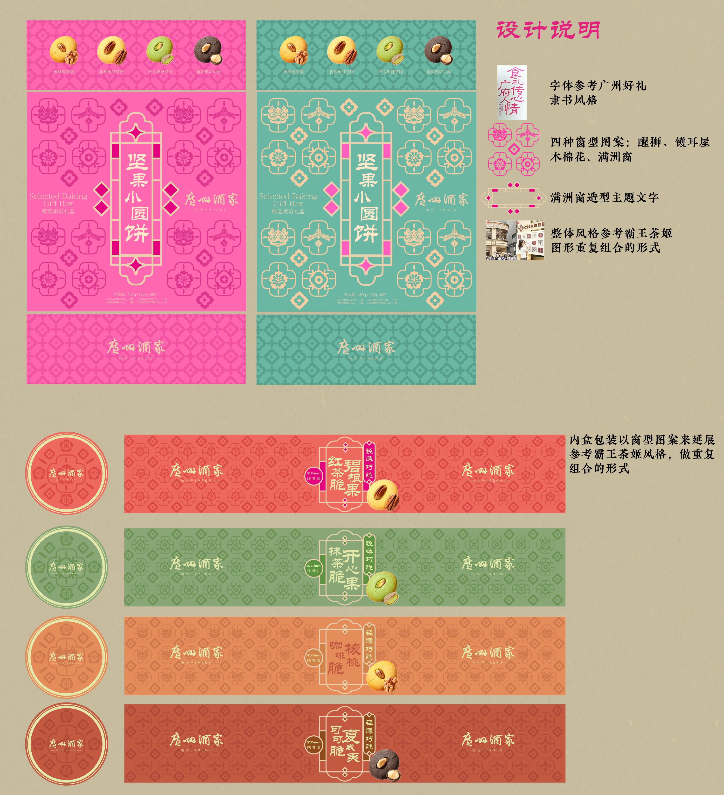
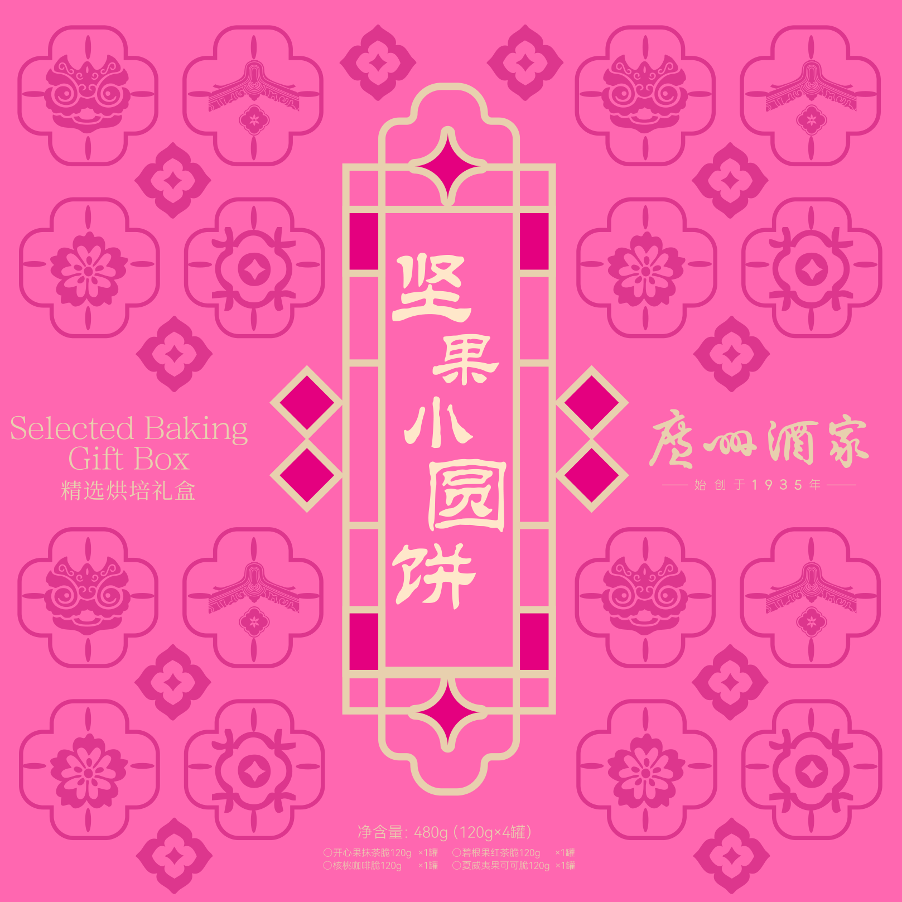
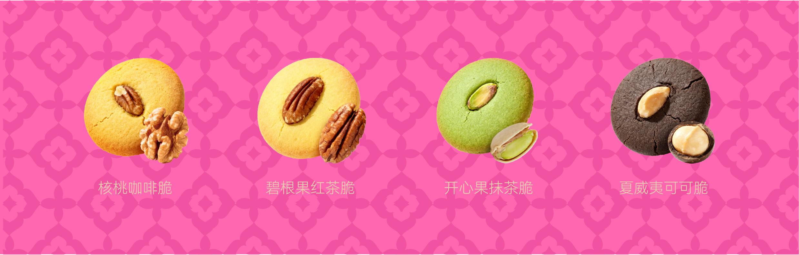

PACKAGING DESIGN
A little
gift.
A nut cookie gift box design for Guangfu Restaurant, bringing local cultural motifs into a colourful contemporary package.

TWO COLOURWAYS
Made to
be shared.
Pink and green packaging designs bring the same graphic language to two distinct presentations.


DESIGN DETAILS
Patterns with
a sense of place.
The design draws on lion dance, traditional rooflines, kapok flowers and decorative windows, repeating the motifs across the box and inner packaging.


